USV survey examples: profiling and sidescan sonar
The example demonstrates the Blueboat with both
downward looking profiling multibeam sonar for bathymetric mapping - sensor parameters to match a Cerulean Surveyor 240-16
a sidescan sonar - sensor parameters to match a Cerulean Omniscan 450 SS
The page has two parts:
Single pass over the undulating seabed with discrete targets: in the demo, the USV moves one straight pass over a gently undulating sandy seabed about 8 m down, past a steel drum under its track, a concrete block to port and a glass float to starboard, and the page shows what each sonar sees on the same pass.
Map a shipwreck: a lawnmower survey over a shipwreck, made into a sidescan mosaic and a point cloud of the soundings, with and without positioning noise.
The sonar sensor model is in the sonar simulation design.
Run everything inside drydock, from ~/maritime_ws, with the workspace sourced.
Part 1: Single pass over the undulating seabed with discrete targets
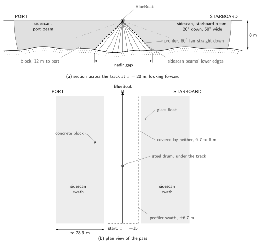
The scene. (a) A section across the track: the sidescan’s beam on each side (shaded, its axis dotted 20° down, its lower edge dashed) leaves a nadir gap under the boat, which the profiler’s 80° fan of soundings covers; between the two, from about 6.7 to 8 m out, neither reaches the seabed within its −3 dB beam. (b) From above: the track, the sidescan swaths, the profiler’s swath and the three targets.
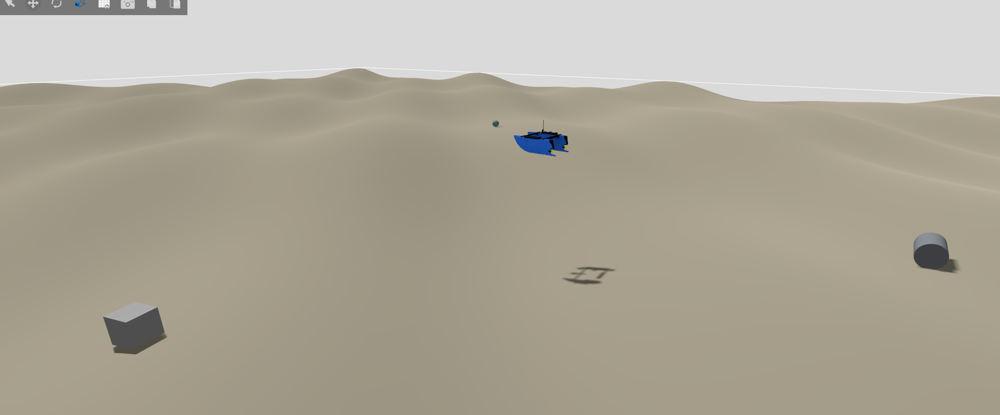
The same scene in Gazebo, from a camera under the water beside the track: the boat on the surface, the drum under its track, the block beyond it and the float nearer the camera.
Launch
ros2 launch blueboat_gazebo sim.launch.xml \
world:=$(ros2 pkg prefix --share gz_sonar)/worlds/sonar_survey.sdf \
config_file:=$(ros2 pkg prefix --share blueboat_description)/config/blueboat_sonar.yaml \
x:=-15
The world loads the sonar system and names its seabed; the config fits the sidescan and the profiler under the middle of the boat, and x:=-15 starts the boat 25 m before the drum.
Watch the sonars
Topic |
What it is |
|---|---|
|
Each side’s line per ping, |
|
Each side’s waterfall, for looking at |
|
The profiler’s soundings, |
|
The same soundings as a point cloud in the profiler’s |
ros2 run rqt_image_view rqt_image_view /blueboat/sidescan/port/image/view
For the soundings, add a PointCloud2 display of /blueboat/profiler/detections/points in RViz with the fixed frame blueboat/base_link.
To read the messages themselves, read_sonar.py (Read the sonar in ROS 2) also takes a sidescan side or the profiler:
ros2 run kai_sonar_bridge read_sonar.py /blueboat/profiler/detections
frame blueboat/profiler_beam_acoustic: 20 soundings, 20 good
36.1 deg (+ starboard): range 10.46 m, across 6.16 m, depth 8.45 m
A sounding is an across-track angle (rx_angles, positive to starboard) and a two-way travel time; its range is half the travel time times the sound speed in ping_info. A sidescan side’s ProjectedSonarImage is one beam of float32 levels in dB.
Drive the pass
ros2 run gz_sonar survey_lawnmower.py sonar_survey --x0 -15 --x1 40 --y0 0 --y1 0
survey_lawnmower.py drives the boat along survey lines on its two propellers, holding each line with a heading and cross-track controller; one line, from x = −15 to 40 along y = 0, is this pass, at about 1.8 m/s, and it stops the propellers at the end. Without it, both propellers at the same command (ros2 topic pub on /blueboat/prop_port/cmd and /blueboat/prop_stbd/cmd) also drive the boat straight ahead, but started a moment apart they can leave it a few degrees off its heading, and the targets then appear at slightly different ranges.
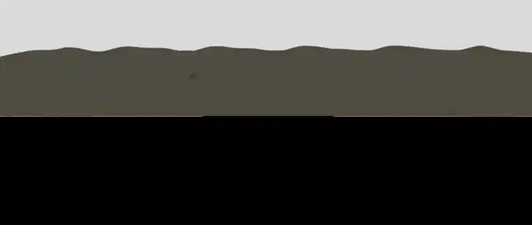
The pass from both sides, played at about twice its speed: the boat in Gazebo above, and below it the two waterfalls, port on the left and starboard on the right, newest line at the top.
What to look for
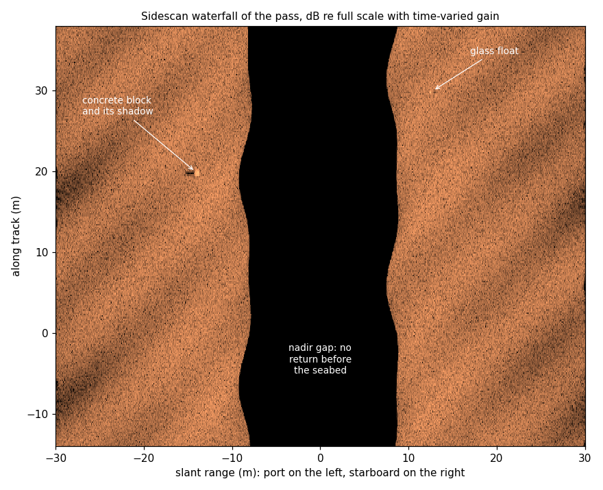
The sidescan, the whole pass. Nothing returns before the seabed, so the nadir gap down the middle is the seabed’s depth under the boat, wider where the water is deeper; the swells show as bands of brighter and darker seabed, brighter where a slope faces the sonar. The drum is under the track, in the nadir gap, where the sidescan cannot see it.
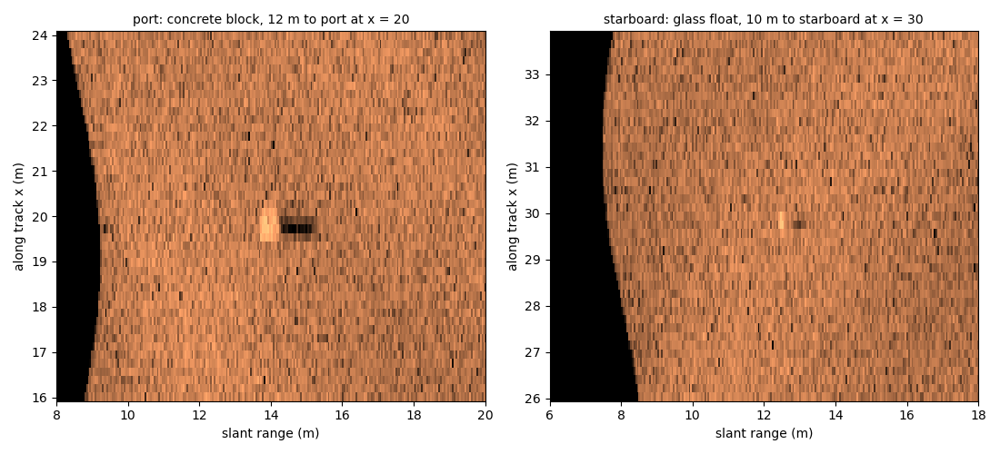
Close-ups. The concrete block, 12 m to port, returns brightly from the face toward the boat and casts a shadow beyond it. The glass float, 10 m to starboard, returns about as brightly: glass is smooth, and its glint is seen only head on, but a sphere always turns part of its surface head on to the sonar. Its shadow is small.
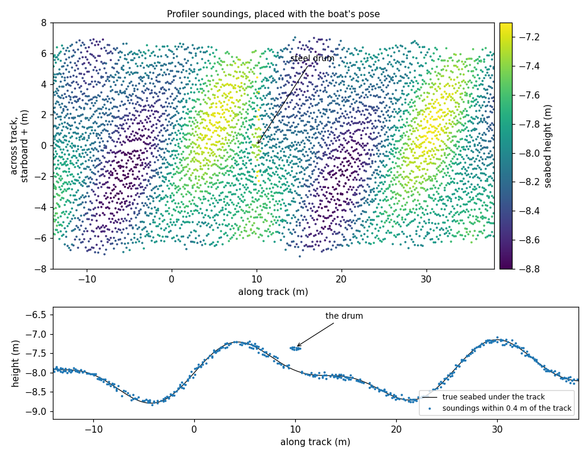
The profiler’s soundings, placed in the world with the boat’s pose. They follow the seabed to within 0.1 m (95 % of them), and rise by about 0.6 m, the drum’s height, over the drum, the only target under the track.
Part 2: Map a shipwreck
In this second demo, the same BlueBoat, with both profiling multibeam and sidescan sonars, executes a lawnmower survey over a shallow shipwreck on a flat sandy seabed. One survey gives two maps: a sidescan mosaic (2D image), which shows the wreck and its shadows, and the profiler’s soundings as a 3D point cloud, which gives its shape. Because the simulation knows the wreck’s geometry exactly, the maps can be checked against that ground truth, and positioning noise can be added to show how it affects them.
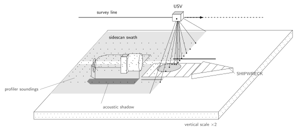
The survey, sketched (vertical scale ×2): on each line the profiler’s fan sounds a strip under the boat, and the sidescan images a wider swath to each side, in which the wreck casts an acoustic shadow away from the track.
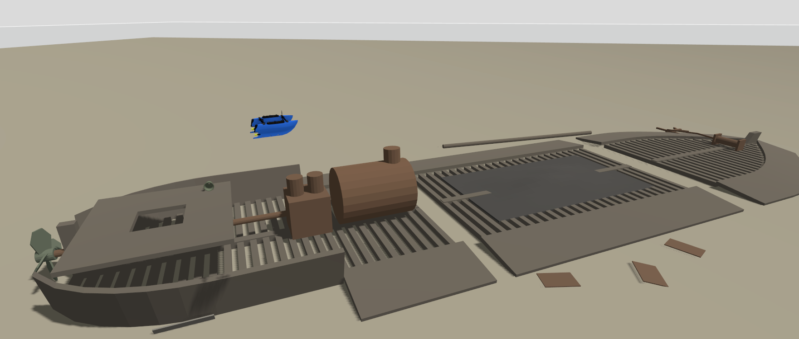
The same scene in Gazebo.
The wreck, model://shipwreck in gz_sonar, is a wooden steam barge modeled on the Monohansett in NOAA’s Thunder Bay National Marine Sanctuary in Lake Huron, at its true size (48.8 by 9.1 m) and broken in three sections. It is an authored approximation, not a survey of the real site. Its meshes are its exact ground truth, and ground_truth/features.yaml names its features (the boiler, the engine, the mast, the anchor and others) in the model’s frame.
The Monohansett was chosen because it is a well-studied shipwreck: it has been surveyed by sonar and by photogrammetry, and the data are public, so the simulated results can be compared with real ones. The model follows NOAA’s description and site plan, and the photogrammetry served as a visual reference.
Real sidescan. The AI4Shipwrecks dataset (Machine Learning for Shipwreck Segmentation from Side Scan Sonar Imagery: Dataset and Benchmark; data at Deep Blue) includes the Monohansett: labeled sidescan waterfalls from an Iver3 AUV with an EdgeTech 2205 at about 520 kHz, beside 27 other Thunder Bay wrecks.
Photogrammetry. Ken Merryman’s 3D model, from 1,475 photographs (2021), on 3DShipwrecks and Sketchfab, gives the wreck’s real shape.
Another simulator. OceanSim (OceanSim: A GPU-Accelerated Underwater Robot Perception Simulation Framework) uses a reconstruction of the Monohansett as one of its scenes.
This page does not make that comparison yet. Two differences matter when it is made: the real wreck lies in about 5.5 m of water and this world puts it at 8 m, and the real sidescan runs at a higher frequency and from an AUV rather than a surface boat. The datasets are linked, not copied into this repository: their licenses permit use, but not all of them permit redistribution.
Launch
ros2 launch blueboat_gazebo sim.launch.xml \
world:=$(ros2 pkg prefix --share gz_sonar)/worlds/sonar_shipwreck.sdf \
config_file:=$(ros2 pkg prefix --share blueboat_description)/config/blueboat_sonar.yaml \
x:=-45 y:=-30
The boat starts at the corner of the survey area, south-west of the wreck.
Survey and record
In one terminal, record; in another, drive (the topics are those of Part 1):
ros2 run gz_sonar record_survey.py sonar_shipwreck survey.npz 900
ros2 run gz_sonar survey_lawnmower.py sonar_shipwreck \
--x0 -40 --x1 45 --y0 -30 --y1 40 --spacing 10
survey_lawnmower.py runs eight lines along x, 10 m apart, from y = −30 to 40, holding each with a heading and cross-track controller and turning at the ends. At about 1.8 m/s the survey takes about 8 minutes of sim time. record_survey.py saves every sidescan line, every ping of soundings and the boat’s pose, each with its sim time; stop it with Ctrl-C once the survey is done, and it saves what it has.
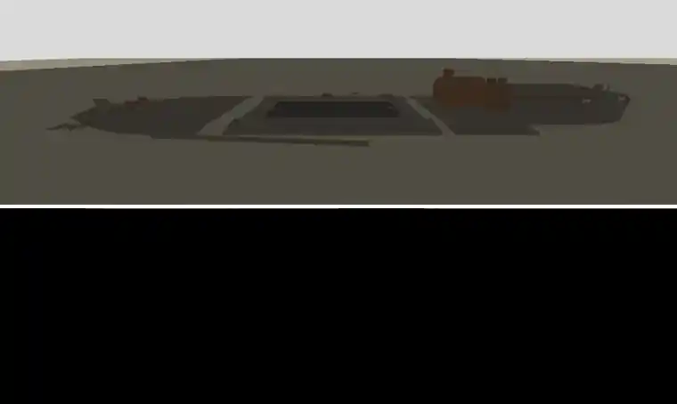
One line over the wreck, played at about twice its speed: the boat in Gazebo above, and its port (left) and starboard (right) waterfalls below, newest line at the top.
The pose here is the simulation’s true pose, which a real survey does not have. Both mapping scripts take --pose-noise (meters) and --heading-noise (degrees) to perturb it, as an imperfect navigation solution would.
The sidescan mosaic
ros2 run gz_sonar sidescan_mosaic.py survey.npz mosaic.png
sidescan_mosaic.py lays each line on the ground with the boat’s pose at its time. Each sample’s slant range r becomes a ground range sqrt(r² − h²), with the altitude h taken from the line’s first seabed return, as a real sidescan’s bottom track does, and the sample is laid perpendicular to the heading on its own side. Cells of 0.25 m keep the mean of the samples that fall in them. Lines taken in the turns are left out: laid perpendicular to a heading that is changing, they fan out across the map.
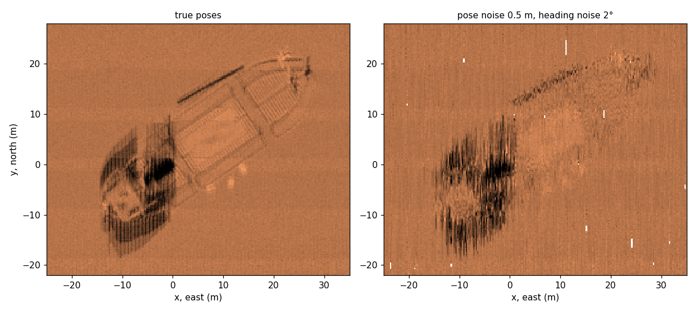
The mosaic around the wreck, with true poses (left) and with 0.5 m of position noise and 2° of heading noise on every line (right).
With true poses, the hull’s outline, its hatches and the breaks between sections are sharp, and the stern section, which stands about 2 m proud, casts dark shadows away from each line that passed it. The mosaic assumes a flat seabed, as a real one does: anything standing proud is laid down at its slant range, a little toward the track. Over the stern, where a line’s first return comes from the wreck rather than the seabed, the altitude changes from line to line and the lines are laid down unevenly. The faint bands across the map are the seams where neighboring lines overlap. With noisy poses, each line is laid a little off, and the wreck blurs along the lines: the hull is still there, the hatches are not.
The soundings as a point cloud
ros2 run gz_sonar soundings_cloud.py survey.npz cloud.ply
soundings_cloud.py turns each good sounding, a two-way travel time and an angle in the profiler’s fan, into a range along that angle, and places it in the world through the profiler’s mount on the boat and the boat’s pose at the ping. It writes an ASCII PLY, which any point cloud tool reads, and a plan view colored by height.
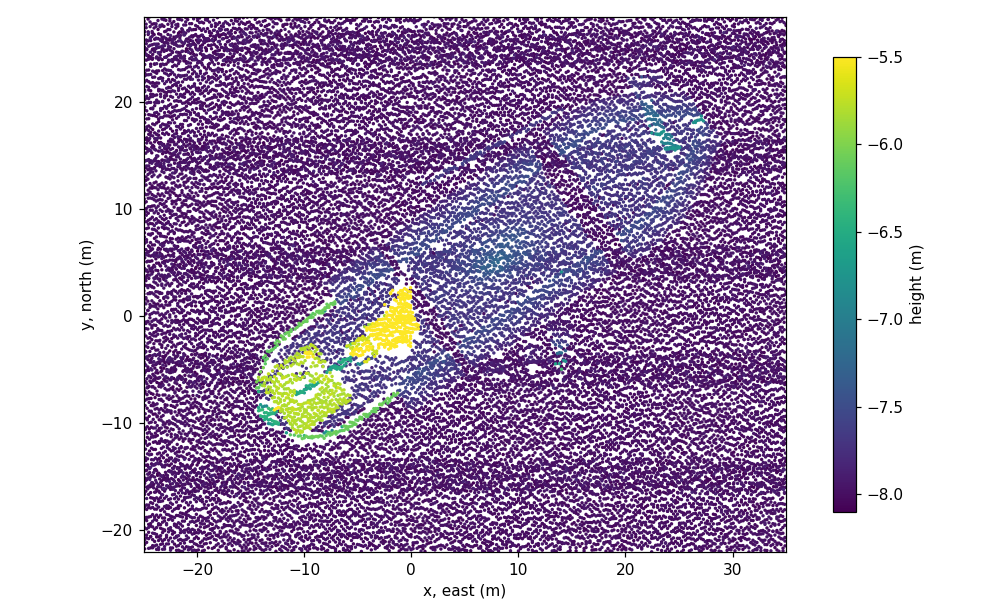
The soundings around the wreck, colored by height: 92,220 points for the whole survey. The forward hull stands a little above the seabed, the stern section about 2 m, and the mast highest of all.